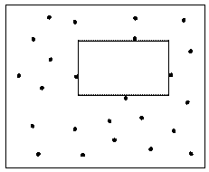
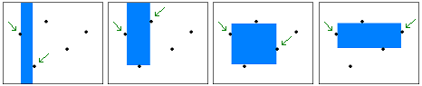
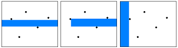

Minimum Enclosing Circle
程度★ 難度★★
Minimum Enclosing Circle
包含平面上所有點（和邊），面積最小的圓。最小外接圓。
圓心位於Farthest Point Voronoi Diagram的頂點上。如果平面有邊界，那麼圓心也可能在邊上。O(NlogN)。
或者，類似半平面交，randomized incremental method。平均O(N)，最差O(N^2)。
UVa 10005 11681
Minimum Bounding Sphere
包含空間中所有點，體積最小的球。
請搜尋Welzl's Algorithm。
http://www.inf.ethz.ch/personal/gaertner/miniball.html
UVa 10095
Largest Empty Circle
程度★★ 難度★
Largest Empty Circle
不含平面上所有點，面積最大的圓。
圓心位於Voronoi Diagram的頂點上。如果平面有邊界，那麼圓心也可能在邊上。O(NlogN)。
Maximum Inscribed Circle
不含平面上所有點和邊，面積最大的圓。最大內切圓。
凸多邊形最大內切圓，每條邊同時往垂直方向等速內縮。每條邊配合左右鄰邊的角平分線，就可求得消失所需距離。現在換個角度來看，不內縮了，改為預測最快消失的邊，刪除此邊，左右鄰邊延長銜接於一點，就縮小問題範疇了。所有邊放入二元樹，按照消失順序排序，每當刪除一條邊就更新二元樹。O(NlogN)。
或者，二分搜尋內切圓半徑，以半平面交驗證。O(NlogR)。
UVa 11257 ICPC 3890
一般多邊形最大內接圓。【待補文字】
正交多邊形最大內接圓。【待補文字】
ICPC 2994
Minimum Enclosing Rectangle
程度★ 難度★★★
Minimum Area Enclosing Rectangle
包含平面上所有點，面積最小的矩形。
先求凸包，再用旋轉卡尺。O(NlogN)然後O(N)。
http://cgm.cs.mcgill.ca/~orm/maer.html
http://mathoverflow.net/questions/23849/minimum-enclosing-rectangle-of-a-convex-polygon-proof
UVa 819 10173 ICPC 5138
Minimum Perimeter Enclosing Rectangle
包含平面上所有點，周長最小的矩形。
先求凸包，再用旋轉卡尺。O(NlogN)然後O(N)。
http://cgm.cs.mcgill.ca/~orm/mper.html
UVa 12307
Minimum Bounding Box
包含空間中所有點，體積最小的矩形。
三維旋轉卡尺，正確性未明。O(N^3)。
UVa 12308
Largest Empty Rectangle
程度★ 難度★★
Largest Empty Rectangle，矩形是擺正的。
不含平面上所有點，面積最大的矩形。
在平面邊界四個角落補上點，窮舉每一點當做矩形左（與右）邊界，然後依序掃描右方（與左方）的點作為右（左）邊界，掃描過程中隨時更新上下邊界。另外，矩形的左右邊界可能是平面的左右邊界。O(N^2)。
 Naamad, Lee, Hsu. On the Maximum Empty Rectangle Problem. Discrete Applied Mathematics 1984, 267-277.
O(SlogN)，S為空矩形總數目，最多O(N*N)，平均O(NlogN)。
Divide and Conquer。O(N(logN)^3)。
UVa 10043
Largest Empty Rectangle，矩形可以旋轉。
O(N^3)。【待補文字】
Minimum Polygon
程度★ 難度★★
Minimum Triangle
挑出三點作為三角形頂點，面積最小的三角形。
點線對偶。O(NN)。
http://3glab.cs.nthu.edu.tw/~spoon/courses/CS631100/Lecture09_handout.pdf
Minimum Polygon
所有點作為多邊形頂點，面積最小的多邊形。
UVa 12300 12386
Largest Empty Polygon
程度★★ 難度★★
Largest Empty Triangle
挑出三點作為三角形頂點，內部不含點，面積最大的三角形。
Largest Empty Convex Subset
挑一些點作為頂點，內部不含點，頂點最多的凸多邊形。
http://www.springerlink.com/content/x6158507n7m61807/
點線對偶，Arrangement。O(N^3)。
【名稱不詳】
挑一些點作為頂點，內部不含點，面積最大的凸多邊形。
ICPC 2674
Convex Hull
挑一些點作為頂點，內部包含所有點，面積最大的凸多邊形。
請見本站文章「Convex Hull」。
Longest Segment in Polygon
ICPC 4756